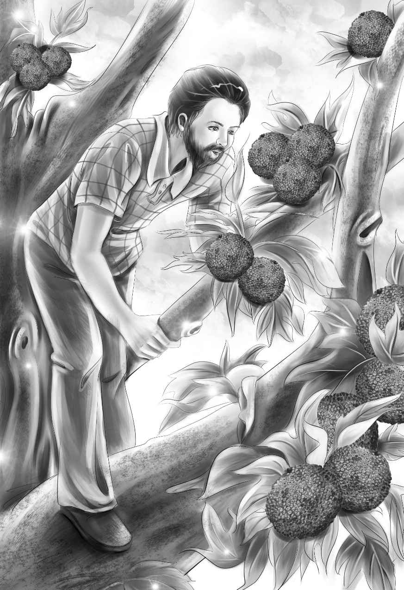

Lars was making the stew now. In the new kettle were the four pieces of fish,spring water,onions and salt. They all lifted the kettle over the fire. The children watched as it began to boil. Violet shook up some dry milk with spring water. After a while Jessie took out the skin and bones. She put in the milk.
"How are we going to eat this?" asked Mike. "It is boiling hot."
"I'll tell you," said Jessie. "We'll set our shells in the sand. You fill them with stew,Lars. Then we won't have to hold them."
"Very good," said Lars. "I have made a fine ladle." The ladle was the tin cup tied on a long stick. Lars ladled out the stew.
"Don't give Mike any fish," said Benny. "He doesn't like fish."
"Well,I'll give him some just the same," said Lars. "He may get to like it."
"Now about Peter," said Benny. "Do you think Peter has been here,or is he here now?"
"Peter could be a name someone taught the bird to say," said Mr. Alden. "Then somehow the bird came to the island."
"It would be exciting if Peter were really here," said Henry. "And is he a boy or a man?"
"Oh,he couldn't be a boy," said Benny. "He couldn't live here all alone."
"Why not,Ben?" asked Mike.
"Well,he would be too lonesome. And how would a boy get here all alone?"
"Oh,I hope it isn't a cannibal,like those in Robinson Crusoe,"said Violet.She looked up quickly.
"Oh,no,Miss Violet!" said Lars. "Don't you be afraid. It couldn't be a cannibal,because there aren't any cannibals on these islands."
Lars gave Mr. Alden a quick look. So Mr. Alden said quickly,"That's right,my dear. Lars knows. And just taste this stew!"
There were no spoons yet,but they used the razor clam shells.
Benny said,"My,you have to work hard to get this stew into your mouth."
"Makes it better," said Henry. "I am going to drink mine when it is cooler. And now what shall we do about this Peter?"
"Just keep your eyes open," said Lars.
"I kept mine open anyway,"said Benny. "Let's catch the myna bird."
"We can't catch a bird," said Henry. "But maybe he can say other things." He whistled. The bird whistled.
"Now just hear that!" said Mike. He whistled. The bird whistled.
Mike got up and started for the tree. But the bird flew away at once. He was lost in the trees.
"Just one thing," said Jessie,looking at her gentle sister. "If Peter is here now,he must speak English."
"That's right,Jessie," said Mr. Alden. "A cannibal would not teach the myna bird to say things in English. And now let's think about something else."
"Well,I think I shall cook a breadfruit today," said Lars. "We will open some canned meat and have a real dinner."
"The stew is gone anyway," said Mr. Alden. "I had five shellfuls. Thank you very much,Lars. I enjoyed it."
Mike said,"I liked mine,too. The fish wasn't too bad,But the stew and crackers were the best. Lars,do you remember you said you'd show us a place to swim?"
"I remember it well,Mr. Mike," said Lars. "I will show you the place when we take a walk."
"Can you swim,Mike?" asked Benny in surprise.
"Well,I can swim a little," said Mike. He was laughing at something. "I like to swim,and it's so hot here."
"It is always hot in the middle of the day," said Lars. "We ought to rest,or else go into the woods. It is cool there."
"I don't want to rest," said Jessie. "Do you,Violet? Let's all go into the woods."
Nobody wanted to rest. They wanted to see the island.
"Just wait a minute," said Lars. "I will pick the breadfruit before we go."
"Where is the breadfruit?" asked Benny.
"Right over your head," said Lars. "I'll try to climb the tree."
Soon Lars came down with two large breadfruit. He climbed up again and came down with two more. He put the green fruit on the sand for them to look at.
"They look exactly like brains!" said Benny.
"Do they really,now?" said Lars laughing.
"How do you know what brains look like,Ben?" asked Mike.
"From pictures," said Benny. "Brains go in and out in a curly pattern,but brains are not green."
"I'll bake them," said Lars. "The fire is just right."
"I wondered why you didn't let the fire go out," said Jessie. "You kept making it bigger and bigger."
"Yes,we have to have a bed of hot coals for the breadfruit," said Lars. "Now I'll put banana leaves around them. Then we'll cover them up in the fire and leave them until we get back. Then I'll show you how to eat them."

"Will they taste like bread?" asked Benny.
"Some people think so," said Lars. "You have to get used to it."
"Let's go,"said Henry."We all want to swim."
"I want to see the place where there are no sharks," said Mike.
"So do I," said Mr. Alden. Everyone was surprised. Benny said,"Can you swim,Grandfather?"
"I think so," said Mr. Alden with a laugh. "I may have forgotten how,but I'd like to try."
"This is the way," said Lars. "It is quite a long walk,but it is very pretty."
They climbed over rocks this time. Once they came to a beautiful,white sandy beach. "Not here," said Lars. "There are sharks here."
"I haven't seen one shark yet," said Benny. "I've looked and looked for them in Blue Bay."
"Blue Bay is full of them,just the same," said Lars.
Violet said,"Isn't it lucky that Lars knows where they are!"
The family walked along the beach.
"More rocks," said Henry. "These are very big. Are you all right,Grandfather?"
"Yes,my boy," said Mr. Alden. "But I hope we will get there soon."
"We will," said Lars. "Take my arm."
Up they all went,jumping from one rock to another. Then Jessie said suddenly,"Oh,isn't this beautiful!"
Everyone stopped to look. Here was a green bay. It was smaller than Blue Bay,and perfectly round. All around the edge were palm trees.
"Trees growing right in the water out there!" cried Benny. "Just in a perfect ring. How can they,Grandfather? What makes them?"
"Those trees are not growing in the water,Benny," said Grandfather. "That is a reef. You will find a lot of land out there,but it is a beautiful sight."
Lars said,"This is the place to swim. The water is not very deep here. See how green it is? Sharks cannot get in here. They can't get across the reef because there is no opening."
They all took off their shoes and walked into the clear water.
"Clothes and all!" shouted Mike. "Isn't this fun! I wish my mother could see me now."
"It's lovely," said Jessie. "It is cool,but not too cool." She looked up just in time to see Mike. He put his hands in front of him and swam off like a fish!
"Mike Wood!"shouted Benny."I didn't know you could swim like that! I didn't know you could swim at all." Benny watched his friend. Sometimes Mike swam under water,and sometimes on top.
"Good work,Mike!" called Mr. Alden. And off he went,hand over hand,with his face in the water.
"Look at Grandfather!" cried Henry. "He and Mike are the best swimmers here."
But then Lars went after them,and there were three fine swimmers. Henry was just swimming on his back when he happened to look on the other side of the reef. He looked again. He stopped swimming and stood up. There was an old boat. It was pulled high up on the sand.
"Come back!" shouted Henry.
It was funny to see everyone coming back so fast Mike said,"Everybody minds everybody!"
"Look at that boat,Lars," said Henry pointing.
They all walked through the water to the reef. They looked across at the old boat.
"It is a lifeboat," said Lars. "But it was not there when I came here three years ago. I'm sure of that."
The boat was full of sand. One end was very deep in the sand,way out of sight. They all stood looking at the boat,when they heard a little noise in the tree above.
"It's a whine!" cried Benny,looking up. "Someone is in trouble."
The whine came again. But it was further away this time.
"It is just a little moan,now," said Violet. Then it stopped.
"Maybe someone doesn't want us to look at this old boat," said Mike.
Henry said,"Maybe someone thinks we are going to take it away. I wonder what it was or who it was?"
"That I cannot tell you," said Lars. "But this is a good boat. It must have a name. You all stay here,and I will walk across the reef and see." He looked at both sides of the boat,and there was its name,Explorer Ⅱ.
"Oh,I know!" cried Lars. "This is a lifeboat. It came from the ship Explorer Ⅱ. The ship hit a reef and went down."
"I remember that!" said Mr. Alden. "I read about it in the newspapers months ago. Some of the people were picked up by another ship and taken to San Francisco."
"I suppose some people got into this lifeboat just as we got in ours," said Benny.
After a while they all went back to the green bay. They swam around in the cool water. Then they came up on the beach and sat in the sun until they were dry. The sun made them feel very sleepy.
"Dry in no time," said Mike. "That's this hot sun for you!"
"Now we'd better sit up here under the trees," said Lars. "The sun is too hot."
They sat down under the palm trees. Soon Mike lay down with his head on his arm. Benny did the same. The rest laughed a little,but soon they were all stretched out on the beach,too. Soon the whole family was asleep on the sand—all but one. Lars was lying down.But he watched the water and the trees and the beach. He saw nothing.
Even Lars did not know that anyone was looking at them from the tree right over their heads.